Day 24｜Samos、多走 7 公里、克羅埃西亞爺爺
2026 年 6 月 13 日 · O Cebreiro → Samos · 31.7km
伴著月色摸黑出發，告別昨天那片最美的日落山頂。抬頭一看，天上還掛著一彎細細的新月，配著滿天星星，安靜到只聽得見自己的腳步聲——這種開場，一天的心情直接先加滿一半。
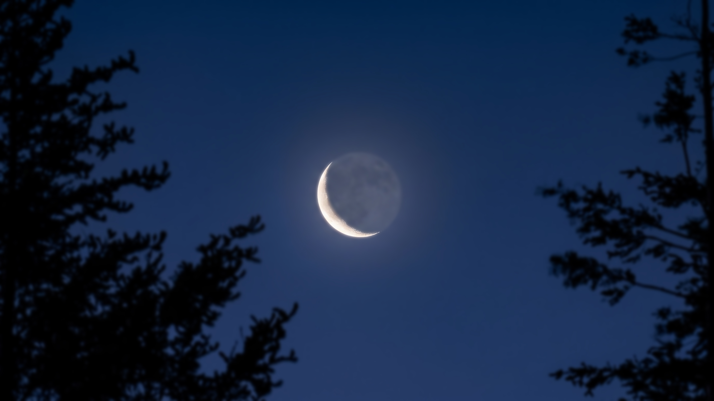
走著走著，天空開始燒起來，整片橘紅色從山脊後面漫開來，雲層被染成金紅色，怎麼拍都像明信片。每天的日出都不一樣，但每天都讓人覺得早起是對的。
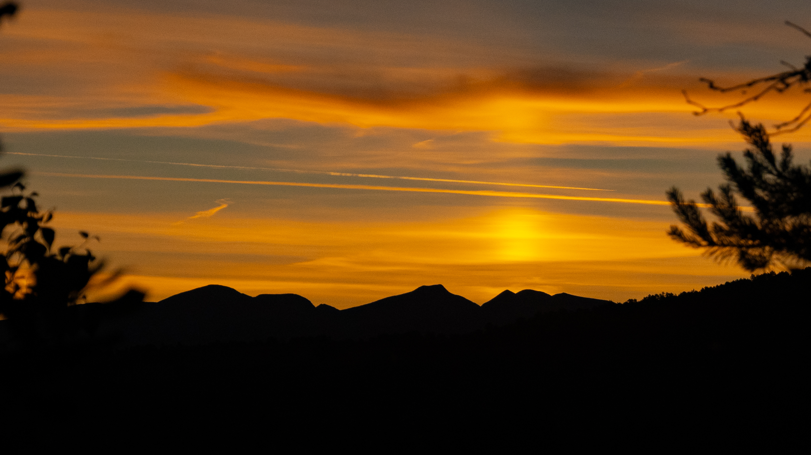
經典的朝聖者銅像在晨光裡超級壯觀，斗笠、背包、拐杖，每個細節都在說「幾百年來大家都是這樣走過來的」。站在它旁邊，突然覺得自己也是這條長河裡的一小段，莫名有點感動。
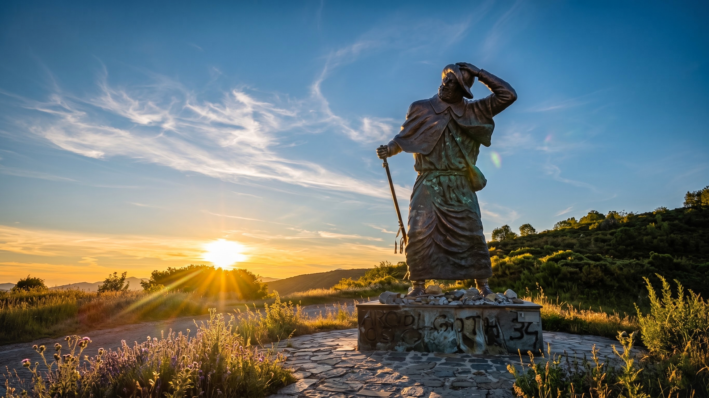
走到 Triacastela，迎來今天的大抉擇——左右二選一。右邊往 San Xil，距離短，是大多數人走的傳統山路；左邊往 Samos，距離多了 7 公里，但沿著河谷走又平又美，重點是有一座超壯觀的千年修道院。這種題目還需要想嗎？果斷選左邊，多走一點路去看不一樣的風景！
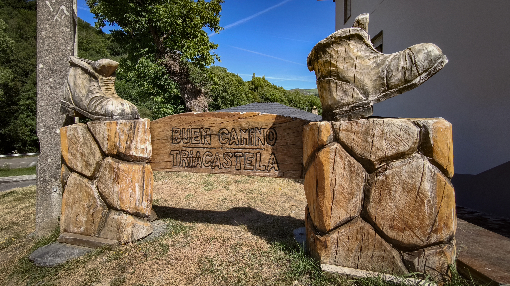
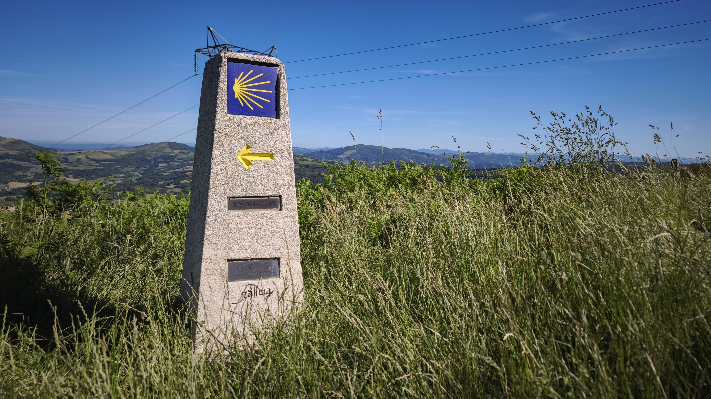
終於抵達 Samos 小鎮！我們寧願多走 7 公里，就是為了眼前這座薩莫斯修道院——西班牙最古老、規模最大的修道院之一，朝聖路上的重要精神堡壘，遠遠看到 SAMOS 地標的時候，腳步都不自覺變快了。
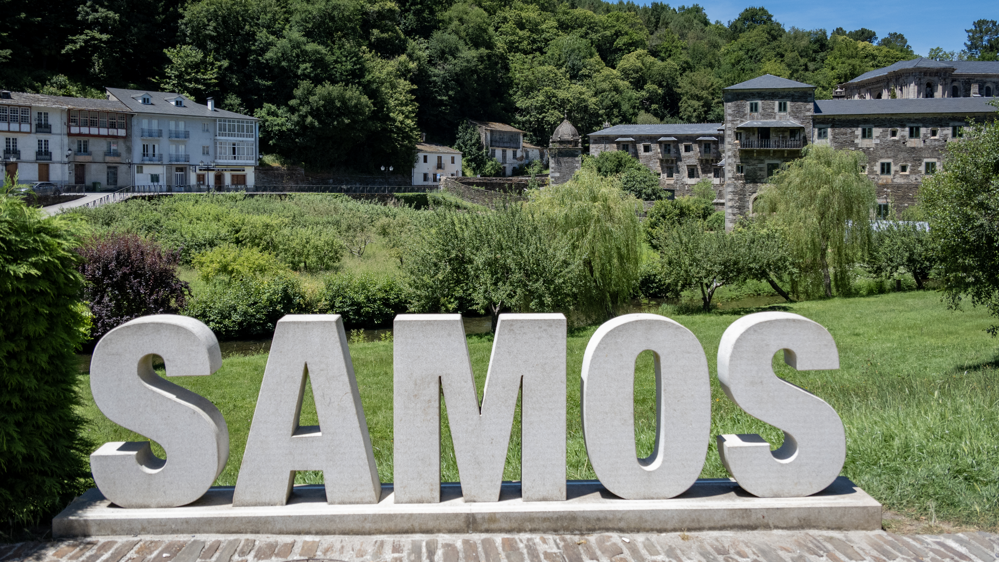
修道院本體比想像中還要巨大，石牆一路延伸到看不到盡頭。走進去抬頭看到古典穹頂的那一刻，整個人直接被震住——華麗的雕刻、莊嚴的光線，宗教的震撼力真的要現場感受才懂。
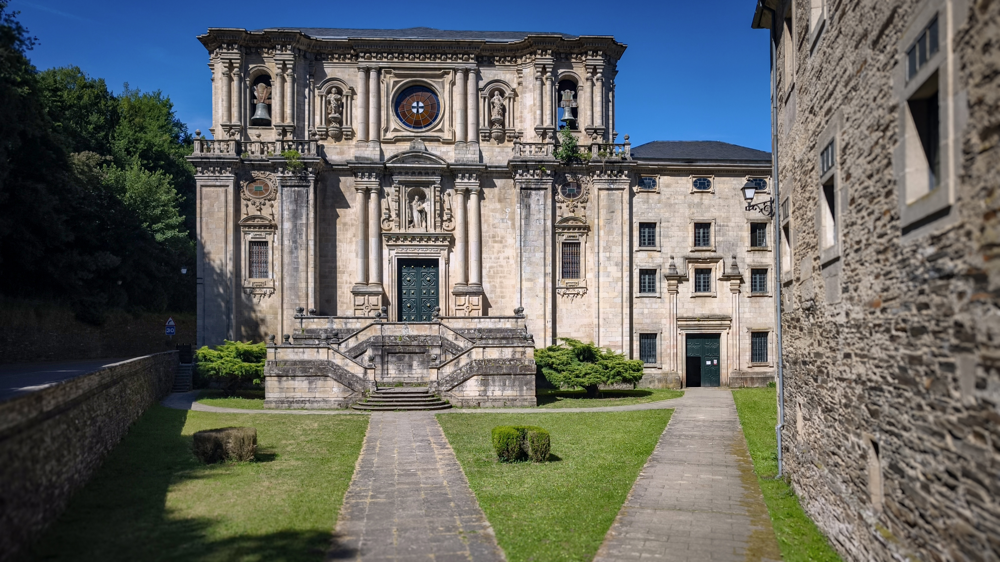
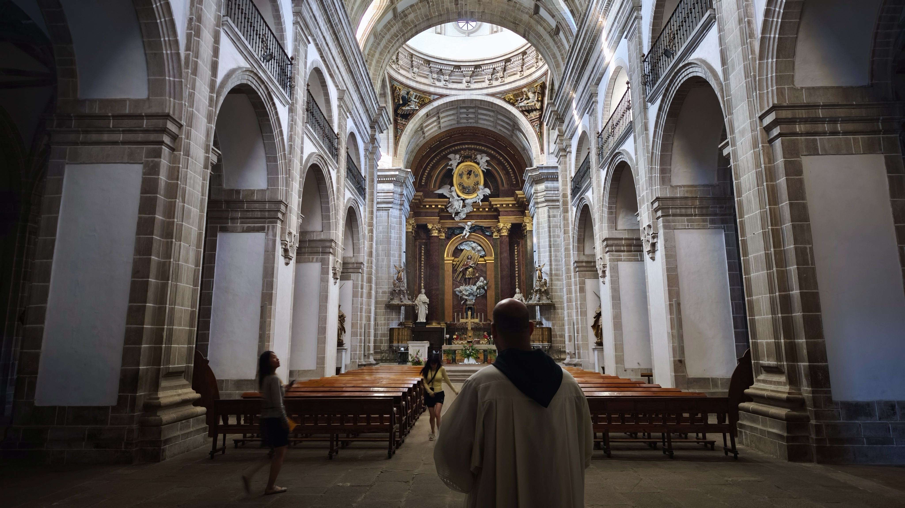
除了修道院，Samos 最迷人的就是這條清澈見底的小河。當斜陽穿透樹林灑在水面上，一束束光影在溪流上晃動，時間彷彿都慢了下來，我在這裡發呆了好久，完全不想走。
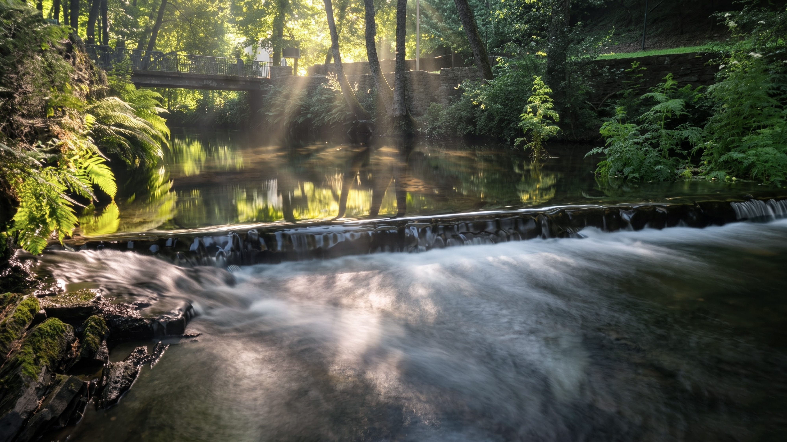
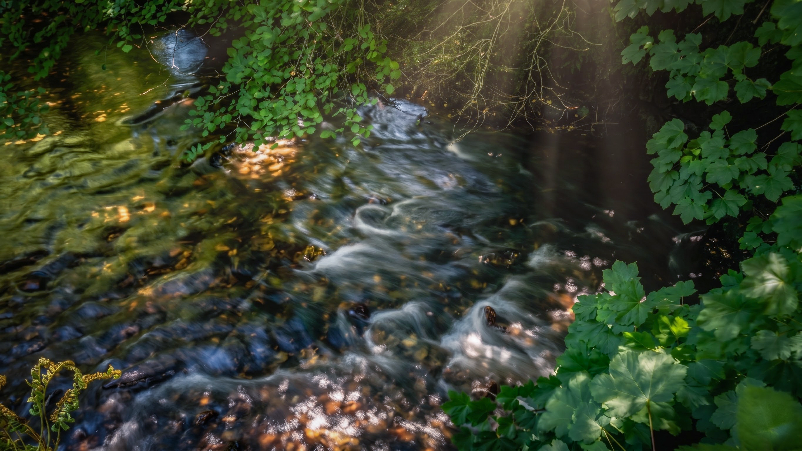
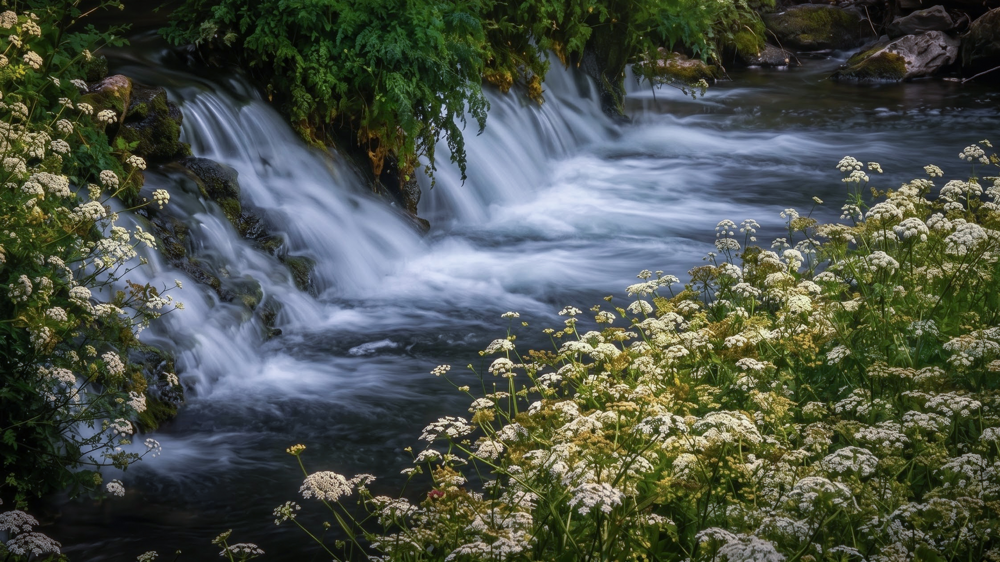
更驚喜的是，在河邊竟然巧遇了前幾天一起住過宿的克羅埃西亞大叔！說真的，這位大叔今天已經出現第三次了——上午遇到、中午遇到、下午又遇到，根本是整路被安排好。最後他直接走過來找我合照，說我很像某部電影裡的人，還認真講了一個克羅埃西亞片名，我一個字都聽不懂，但沒關係，語言不通，笑容是通的。有些人不用約，路會幫你安排。
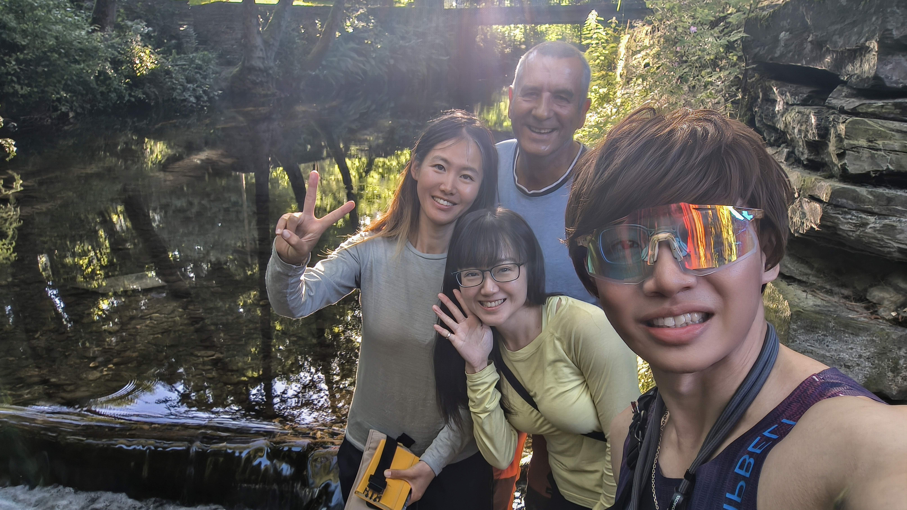
📚 朝聖者小百科：Samos
薩莫斯（Samos）藏著西班牙最古老的修道院之一——聖胡利安修道院（Monasterio de San Julián de Samos），建於 6 世紀，至今仍有本篤會修士在此生活，規模大到走一圈要花上不少時間。
從 Triacastela 出發有兩條路：右線經 San Xil 較短，是大多數人走的傳統山路；左線經 Samos 多約 7 公里，但沿著河谷一路平緩、綠意盎然，是加利西亞最美的森林路段之一。
🏛️ 修道院導覽約 €5，修士親自帶隊，英文可通
🌲 左線 Samos 比右線多 7km，但美太多，值得
🥾 31.7km · 下降 1200m，從雲端一路走進河谷的一天
| 自由捐贈（畫、章） | €0.5 |
| 自由捐贈住宿 | €15.0 |
| 合計 | €15.5 |
🎬 對應 Vlog EP6｜濃霧中的鐵十字架！放下石頭後真的會變輕嗎？入住《西班牙寄宿》拍攝地